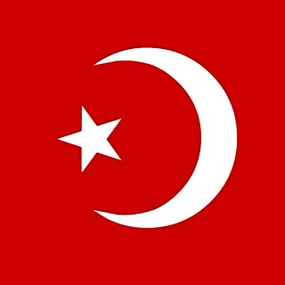

Религия

Ислам — одна из мировых религий, которые придерживаются монотеизма, то есть веры в одного Бога. Как и для христиан, ислам для его приверженцев — это гораздо больше, чем религия.
Основные принципы, суть ислама:
Ислам считается самой молодой из мировых религий. Он зародился на юго-западе Аравийского полуострова в начале VII в. в Хиджазе среди племен Западной Аравии. Основателем Ислама стал пророк Мухаммед (570-632 гг.). Он создал общину, которая легла в основу государственного устройства – Арабского халифата.
Среди принципов Ислама — единобожие: «нет никакого божества, кроме Аллаха, а Мухаммед – пророк Аллаха».
Согласно Исламу, Аллах передал Мухаммеду через ангела Коран, который стал священным писанием для мусульман.
Священная книга мусульман — Коран состоит из 114 глав.
Ислам и православие
Несмотря на то, что Ислам, как и христианство — монотеистическая религия, мы не можем говорить о том, что верим в одного Бога, потому что Бог не обезличен. Иисус в Исламе считается лишь пророком, но не Богом. Ислам относит христиан к «людям Писания» и не отрицает личности Иисуса, но в Исламе Спаситель — только пророк Аллаха.
Здание для коллективных молитв мусульман называется мечетью; флигелем к мечети пристраиваются башни-минареты. Согласно шариату, для мусульманской молитвы, в том числе и коллективной, может использоваться любое помещение, кроме бань и туалетов. В христианстве храм — центр богослужения, там совершаются Таинства, религиозные браки. Ритуалы бракосочетания и похорон традиционно в Исламе совершаются вне мечети.
Джума
Отдельным днем в религиозном исламском календаре стоит Джума (от араб. день собрания) — пятница, именующаяся лучшим днем недели. Джума — праздничный, но не обязательно нерабочий день в пятницу у мусульман. Фактически Джума считается днем отдыха и празднуется еженедельно, как у христиан воскресенье, а у иудеев — суббота. В большинстве мусульманских стран пятница — официальный выходной день, хотя в Турции, где религия отделена от государства, выходной день — воскресенье.
В Коране говорится: «О вы, которые уверовали! Когда вас зовут на коллективную молитву в пятницу, стремитесь к поминанию Аллаха (к проповеди и намазу), оставив торговые дела, это лучше для вас, если только вы разумеете» (62:9).
В священном хадисе также сказано: «Суббота дарована иудеям, воскресенье — христианам, а пятница — мусульманам. В этот день им ниспосылается благодать и все доброе».
Джума, согласно Шариату, начинается с заходом солнца в четверг и продолжается до его захода в пятницу. Таким образом, священными являются пятничный день и ночь накануне.
Совершение грехов в пятницу особенно недопустимо. Это считается пренебрежением к священному дню, к милости Всевышнего, ниспосылающейся в джума. В этот день многократно увеличивается не только воздаяние за добродеяния, но и наказание за нечестивые поступки.
Джума-намаз является обязательным (фардом) для совершеннолетних, согласно Шариату, мужчин. В хадисе сказано, что пропуск трех пятничных молитв без уважительной причины (недомогание, болезнь) особенно запрещен.